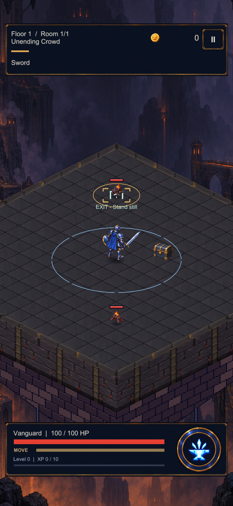

Final çıkışı · Unity görüntüleri
Mühür oyunun gerçek konumunu ve bekleme süresini izliyor. Bu görüntüler test katından alınmış gerçek Unity renderlarıdır; telefon kaydı değildir.

Ekran dışı kontrolünde kamera bilerek arenadan uzağa taşındı. Çıkışın gerçek konumu değişmedi.
Doğrulama notları